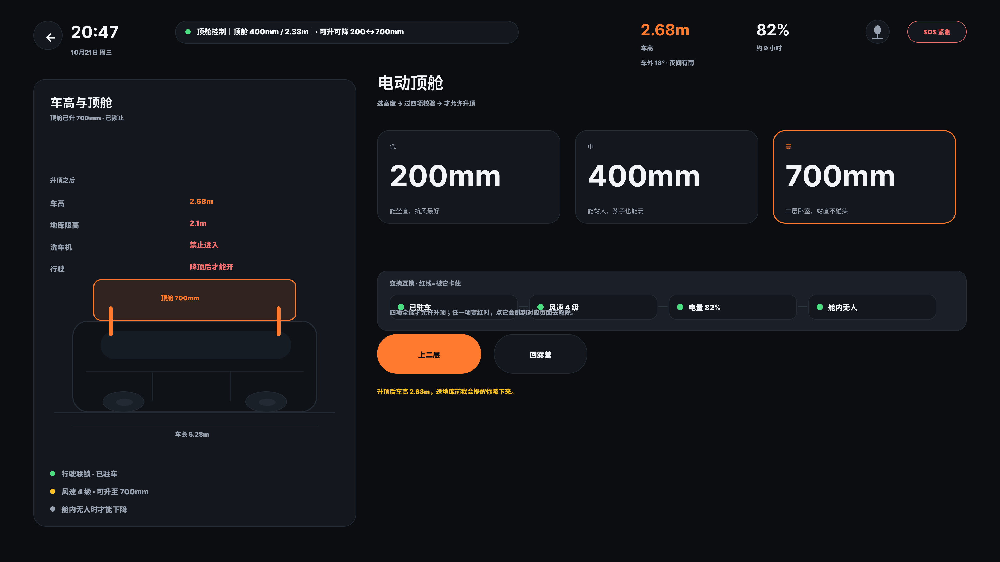
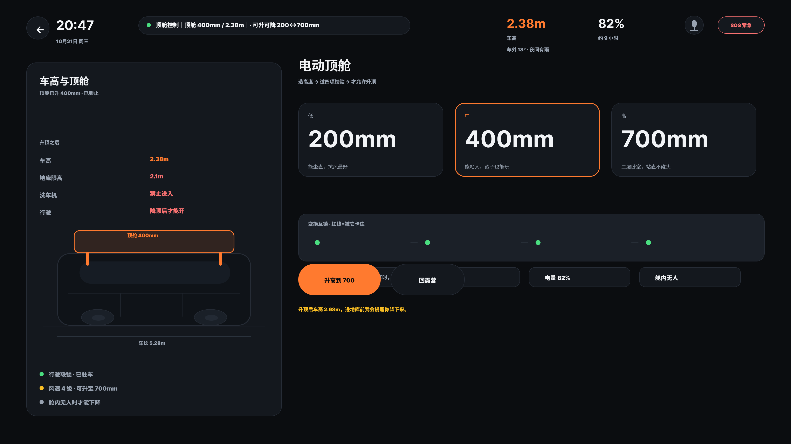
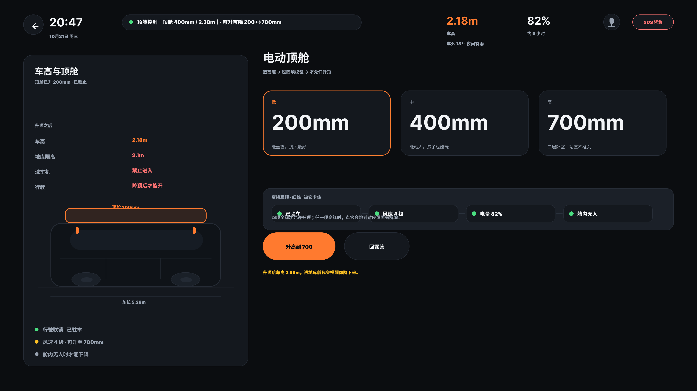

07
顶舱三档
700 / 400 / 200 不是刻度，是三个边界

700mm 二层卧室，站直不碰头
车高 2.68m · 进不了 2.1m 地库

400mm 能站人，抗风更稳
车高 2.38m · 4 级风的建议值

200mm 能坐直，抗风最好
车高 2.18m · 临时避让
三个数是顶舱升起量，不是车高。多数城市地库限高 2.1m——200mm 档的 2.18m 仍然进不去，要进地库必须收到 0（顶舱完全收起，车高 1.98m）。
10
尺寸与可读性规范
每条数字都有出处，也都有换算
画布 1920×1080，按 1dp = 1px 设计；下文「76px」即标准里的「76dp」。
触控目标 ≥ 76×76 dpAndroid for Cars（CarPlay HIG 为 44×44 pt）。
实测：可点控件 69 个，主操作 100% ≥ 76px，其余 18 个内联控件例外见 P11。
对比度 ≥ 4.5:1WCAG 2.2 AA。实测：正文 17.66:1 ／ 次要 7.53:1 ／ 橙色 7.48:1。
单次视线 ≤ 2 秒、单任务 ≤ 12 秒NHTSA 视觉手动分心指南。一键扎营 = 1 次点击。
字符高度约 ≥ 20 弧分ISO 15008。按 1920×1080 画布、1dp = 1px 折算。
12
工程闭环
三轮返工，同一个根因
现象按钮放大后压住卡片，三轮返工，越改越乱。
根因用「事后撑大」代替「源头设计」：56px 的按钮画完再向上下扩 10px，必然侵入相邻文字。
修复尺寸在创建时即写 76px，行距同步让位；停用两个后处理 pass。
验证五项自动检查（接线、挤压、触控、帧重叠、状态一致性）覆盖全部已接线元素；
四个 git 基线（baseline / squeeze0 / interactive / final）可逐笔回滚。
检查不覆盖 P11 列出的 18 个内联控件尺寸例外。